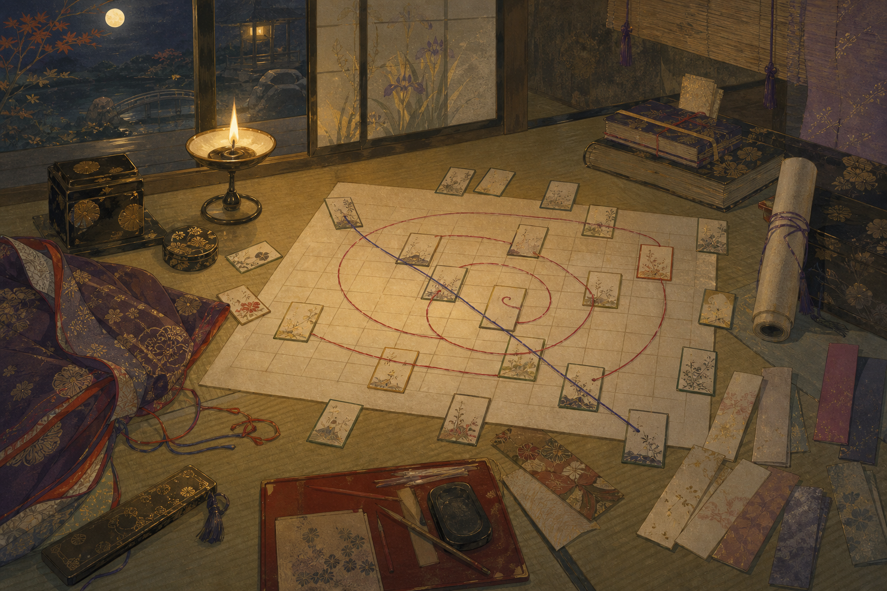
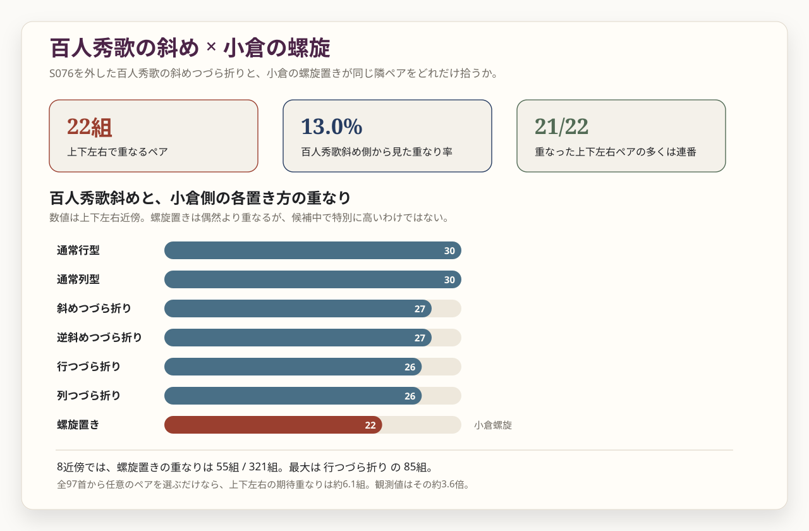

螺旋の小倉、
斜めの秀歌
第2章では、百人秀歌の斜めつづら折りと、小倉百人一首の螺旋置きが、それぞれ別の場所で目を引いた。では、この二つはどこかで同じ隣関係を作っているのか。それとも、似たように謎めいて見えるだけで、実際には別の数学遊びなのか。第3章では、組み合わせそのものを比べる。
1. 本章の問い
第2章の最後で、二つの違うミステリーが見えてきた。一つは、百人秀歌を10×10に置いたとき、斜めつづら折り型が目立つこと。もう一つは、小倉百人一首を単独で10×10に置くと、上下左右だけを見る条件では螺旋置きが高くなることである。
ここで、当然こう思う。百人秀歌の斜めつづら折りと、小倉の螺旋置きは、実は似た隣関係を作っているのではないか。もしそうなら、かなり面白い。百人秀歌側の見え方と、小倉側の見え方が、別の置き方を通してどこかでつながっていることになる。
ただし、ここで急いで物語にしてはいけない。10×10への置き方は、順番を平面へ折りたたむ操作である。折りたたみ方を変えれば、同じ歌順でも隣になる相手が変わる。そこには文学的な読みの入口もあるが、同時に、かなり単純な数学遊びも混じる。

2. どう比べるか
比べ方は単純である。第2章で目立った条件を一つずつ取り出す。百人秀歌側は、S076 源俊頼別歌を枠外に置き、残り100首を斜めつづら折り型に置く。小倉側は、100首を螺旋置きに置く。どちらも text-embedding-3-small の10×10検査用本文条件で見ている。[M-3]
そのうえで、共通97首だけに絞り、マス目上で同じ二首が隣になるかを調べる。上下左右だけを隣と見る場合と、斜めも含める8近傍の場合を分けた。
ここで見ているのは、歌の意味の近さではなく、配置が作る隣接ペアの一致である。つまり、「同じ歌どうしを近所に置いているか」を見ている。意味的に近いかどうかは、その次の問題である。
3. 斜めと螺旋は一致するか

結論から言うと、驚くほど一致していたわけではなかった。上下左右だけを見ると、百人秀歌斜め側の共通歌隣接169組のうち、小倉螺旋と重なったのは22組である。率にすると13.0%である。斜めも含める8近傍では、321組のうち55組、17.1%が重なった。
ただし、まったく偶然というほどでもない。共通97首から同じ数だけ無作為にペアを選んだ場合、上下左右で期待される重なりは約6.1組である。実際には22組なので、その意味では多い。けれど、同じ百人秀歌斜めを、小倉側の別の置き方と比べると、通常行型・通常列型では30組、斜めつづら折り型では27組が重なる。螺旋置きは、むしろ候補の中では低い方だった。
| 小倉側の置き方 | 上下左右で重なる組数 | 受け止め方 |
|---|---|---|
| 通常行型 | 30組 | この比較では最も多い。 |
| 通常列型 | 30組 | 通常行型と同じ値になる。 |
| 斜めつづら折り型 | 27組 | 百人秀歌と同じ置き方だが、完全には一致しない。 |
| 行・列つづら折り | 26組 | 螺旋よりやや多い。 |
| 螺旋置き | 22組 | 偶然よりは多いが、特別に多いわけではない。 |
4. 重なったペアの正体
では、22組の重なりは何だったのか。ここが面白い。22組のうち21組は、たとえばH001-H002、H003-H004、H005-H006のような、小倉番号で隣り合う連番ペアだった。つまり、斜めと螺旋が深いところで同じ構造を共有していた、というより、どちらの置き方も歌順の局所的な近さをある程度残すため、連番ペアが共通して出てきたと見る方が自然である。
以下の表では、22組すべてではなく、見え方を説明しやすい代表例を挙げる。
| 重なったペアの例 | 歌人 | メモ |
|---|---|---|
| H001-H002 | 天智天皇 / 持統天皇 | 冒頭の連番ペア。 |
| H003-H004 | 柿本人麿 / 山部赤人 | 古代歌人の連続。 |
| H053-H054 | 右大将道綱母 / 儀同三司母 | 女性歌人が続く位置。 |
| H065-H084 | 相模 / 藤原清輔朝臣 | 22組中唯一の非連番ペア。 |
| H089-H090 | 式子内親王 / 殷富門院大輔 | 後半の連番ペア。 |
| H096-H097 | 入道前太政大臣 / 権中納言定家 | 末尾近くの連番ペア。 |
その中でH065-H084だけは、唯一の非連番ペアとして目に留まる。相模と藤原清輔朝臣が、どの語感や主題で近づくのかは、螺旋配置から本文へ戻るための小さな読みどころになる。
仮に本文から手がかりを拾うなら、相模は恋に朽ちる名を惜しみ、清輔は憂しと見た世を後から恋しく思う。どちらも「恋」という語を含むが、一方は恋愛の痛み、もう一方は過ぎた時代への追懐である。似た語が効いたのか、つらい現在を別の時間から見返す声が近いのかは、ここから本文へ戻って確かめる必要がある。
これは少し拍子抜けする結果だが、同時に大事である。重なりはある。しかし、その重なりは「斜めと螺旋が秘密の同型だった」と言うほどのものではない。むしろ、順番を平面へ折りたたむと、局所的な連番があちこちで隣として残る。その結果、いかにも意味ありげな一致が生まれる。
5. 小倉螺旋を読む
では、小倉の螺旋置きは意味がないのか。そうは言い切れない。百人秀歌の斜めと強く対応しないとしても、小倉百人一首そのものを螺旋に置いたとき、上下左右の近所に意味的に近い歌が来やすかった、という観察は残る。第2章の値では、螺旋置きの上下左右 percentile は0.9007だった。
この節の類似度は、第2章・第3章の10×10検査用にそろえた original 条件で計算した値である。第1章の隣接表は original_kana 条件なので、同じペアでも小数値が一致しない場合がある。ここでは、螺旋配置で読み返す候補を探すための別検査として読む。
小倉螺旋の上下左右で近く出たペアを見ると、連番だけではない。たとえば、H087 寂蓮法師と H098 従二位家隆、H002 持統天皇と H037 文屋朝康、H063 左京大夫道雅と H084 藤原清輔朝臣のように、通常の歌順では隣り合わない組も上位に出る。
| 螺旋上の近接ペア | 歌人 | 類似度 small （10×10用条件） |
|---|---|---|
| H052-H053 | 藤原道信朝臣 / 右大将道綱母 | 0.583 |
| H087-H098 | 寂蓮法師 / 従二位家隆 | 0.581 |
| H070-H071 | 良暹法師 / 大納言経信 | 0.547 |
| H044-H045 | 中納言朝忠 / 謙徳公 | 0.544 |
| H002-H037 | 持統天皇 / 文屋朝康 | 0.543 |
| H063-H084 | 左京大夫道雅 / 藤原清輔朝臣 | 0.515 |
この表は、すぐに文学的結論へ飛ぶためのものではない。むしろ、小倉螺旋という条件で、どのペアを読み返すと面白いかを示す目印である。上位には連番ペアもあれば、螺旋に置くことで初めて近所になるペアもある。ここから、小倉側だけの別の読み筋が生まれる。
6. 数学遊びとしての配置
第3章で見えた結果は、少し冷静なものだった。百人秀歌の斜めつづら折りと小倉の螺旋置きは、驚くほど一致していたわけではない。重なりはあるが、その多くは連番ペアで説明できる。つまり、ここには文学的な暗号というより、順番を平面へ折りたたむときに生じる数学的な効果がかなり混じっている。
しかし、それで面白さが消えるわけではない。百人一首研究の魅力の一つは、歌順や配列に何かが隠れているのではないか、という感じが何度も立ち上がるところにある。今回見えたのは、その感じが生まれる理由の一部である。少しの差し替え、少しの置き方の違い、隣をどこまで見るか。これだけで、見える形が変わる。
だから、埋め込みは「謎を解いた」のではない。むしろ、謎が立ち上がる条件を可視化した。百人秀歌の斜め、小倉の螺旋、共通97首の固定。どれも、本文へ戻るための違う入口である。
7. ここから先
次に必要なのは、数値で目立ったペアを本文へ戻すことである。小倉螺旋で近く出たペアは、語、主題、部立、出典、時代、歌人関係のどれで近いのか。あるいは、埋め込みがたまたま似た語感を拾っただけなのか。ここは、数字だけでは判断できない。
第1章は分布を見た。第2章は、百人秀歌から小倉へ移る差し替えを見た。第3章は、配置そのものがミステリーを生む仕組みを見た。ここまで来ると、次は本当に歌へ戻る段階である。